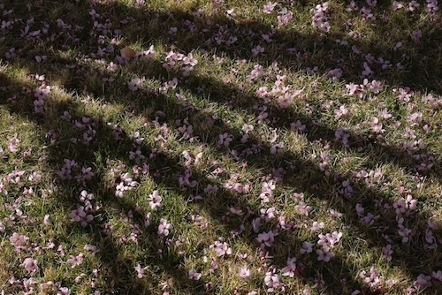
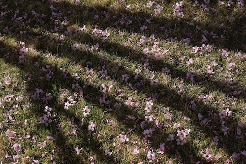
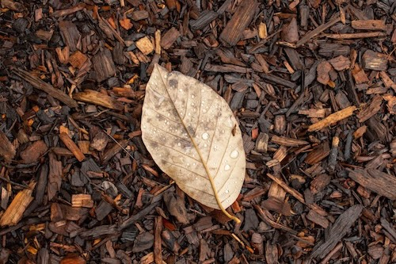
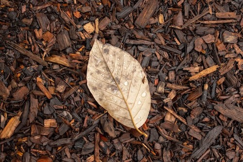

Visual storytelling comes in many forms.
The images in this portfolio use light and shadow, among other elements, to encourage feelings of peace, wonder, and appreciation for life and creation in its different forms. If you look for it, beauty, purpose, and connection can be found, even in the smallest of details.


 



 
